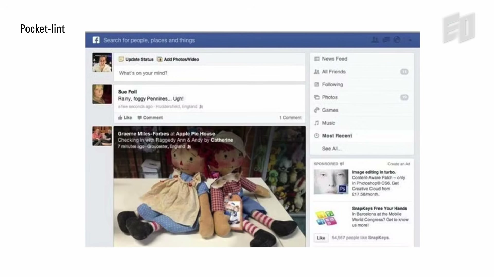
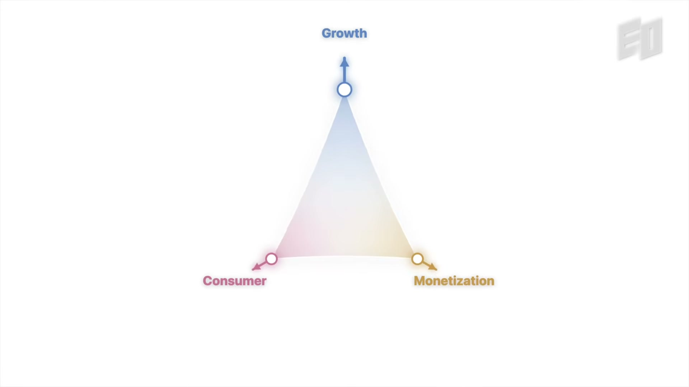

Executive summary
Find the essence, then organise product, team, and career around it
Peter Deng defines product more broadly than the interface a team ships. The product is whatever actually solves the customer's problem. At Uber, the rider's product may be price and arrival time rather than the arrangement of controls in the app. For an early-morning airport reservation, the deeper product is peace of mind. Once that truth is explicit, teams can subtract irrelevant work and direct their attention toward details that strengthen the outcome.
The interview applies the same pattern at three scales. Product leaders must remove features and assumptions until they expose the enduring structure. Managers must stop being the decision bottleneck and deliberately move people from direction toward delegation. Individuals must decide which metric they want a career to optimise; Deng chose learning, even when that required entering unfamiliar companies and unlearning established habits.
- Simplicity comes from editing, not from having few ideas. Durable structures emerge after the team identifies the smallest set of concepts that preserve the whole product.
- State the customer's problem in the customer's language. Company problems such as revenue or internal efficiency are constraints, not automatically the user's reason to choose the product.
- Convert the abstract promise into details. If the outcome is peace of mind, every notification, commitment, fallback, and recovery state should increase confidence.
- Treat failure as information. A growth mindset is operational when a team changes what it will do next, not when it merely uses optimistic language.
- Management succeeds when dependency falls. Telling should progress through coaching and scaffolding toward delegation; endless oversight is a system failure.
- Healthy conflict expands the solution space. Different functions and business goals should pull in different directions before the team integrates them into one decision.
- Choose the career metric consciously. Promotion, money, impact, craft, autonomy, and learning are legitimate but different objectives. Unnamed optimisation produces accidental careers.
Evidence boundary. This article is based on Deng's interview and public profiles. The reported scale and financial performance of Uber Reserve, the “100x versus 5x” hiring comparison, and internal product stories are speaker claims, not independently audited findings. They are treated here as examples of his operating philosophy rather than universal causal proof.
Product thinking
Subtract until the structure can survive changing technology
Deng recalls joining Facebook as its fourth product manager, when product management had little formal process and teams had to invent their own way of working. The News Feed problem was not merely to arrange a page. The team had to define the stable taxonomy of a social post: the person, their identity, what they said, an attachment such as a photo or location, and the interactions around it. Interfaces changed, but that conceptual structure endured.

His phrase “measure twice and cut once” does not mean avoiding iteration. It means making foundational decisions at the right level. If the core object model is confused, adding UI polish or more features compounds the confusion. If the abstraction is correct, many future products can build on it without reinventing the meaning of the system.
Problem truth
What outcome is the customer hiring this product to create?
Enduring concepts
Which objects and relationships remain true as surfaces and technologies change?
Edited expression
What is the simplest experience that makes those concepts understandable and useful?
This is why “simple” is not synonymous with minimal visual design. A product can have very few controls and still embody the wrong abstraction. Conversely, a sophisticated workflow can feel simple when its concepts match how users already understand the problem. Product simplification begins with conceptual precision and only then reaches pixels.
A broader definition
The product is whatever removes the customer's constraint
After working across several product categories, Deng stopped defining product as what appeared on the screen. A customer wants a result. The “product” may therefore be a price, an estimated arrival time, a guarantee, a human service, or a process that the software makes reliable. Product leadership requires enough honesty to recognise when the team's feature is not the most important part of the outcome.
This creates a useful test for strategy documents. A company may write, “We need to increase margin,” “We need adoption,” or “We need users to complete this flow.” Those statements describe company needs. They do not yet explain the customer's friction. Teams that start there can produce manipulative or irrelevant features because the business objective has silently replaced the human problem.
| Layer | Question | Common failure |
|---|---|---|
| Customer outcome | What becomes possible, easier, safer, or less uncertain? | Describing the feature instead of the change in the user's life. |
| Product mechanism | Which combination of software, service, price, supply, and communication creates that outcome? | Assuming the app surface is the whole product. |
| Business viability | Can the company create the outcome repeatedly and sustainably? | Making the company's revenue problem the user's problem. |
| Evidence | What behaviour or result would show that the constraint was actually removed? | Celebrating launch, clicks, or polish without measuring the outcome. |
Case study
Uber Reserve turns “peace of mind” into product requirements
Deng describes the anxiety of an early flight. At 3:30 a.m., the rider is not looking for the abstract ability to schedule a car. They want assurance that transportation will appear when the consequence of failure is missing a flight. Defining the problem as “peace of mind” changes the design target.
That target explains why matching a named driver and showing their picture can matter. The system may later need to swap drivers, but the visible commitment gives the rider something concrete. Other requirements follow from the same outcome: confirmation, reminders, status, clear cancellation behaviour, early arrival, and recovery when the first plan fails. Each detail should reduce uncertainty rather than merely add functionality.
Uber's public Reserve material supports this framing: the service emphasises advance booking, confirmation, assigned-driver details, and on-time pickup while also noting that availability and driver acceptance are not absolute guarantees. That qualification matters. Product trust grows when communication aligns confidence with the system's actual capability.
Product-spec translation. Start with the emotional or operational outcome, then derive evidence the user needs at each point in the journey. For “peace of mind,” specify what the system has committed to, how the user can verify it, when uncertainty reappears, and how the product restores confidence.
Learning system
A loss becomes a lesson only when behaviour changes
Deng connects his career to Carol Dweck's distinction between fixed and growth mindsets. His practical version is deliberately plain: he owns many gadgets but not a time machine. The past cannot be repaired; blame that produces no new action wastes the only useful part of failure.
The danger is turning “growth mindset” into a motivational slogan. A serious learning loop asks what assumption failed, which signal was ignored, which decision rule should change, and how the team will detect the same pattern earlier. Responsibility is not self-punishment. It is the willingness to alter the next attempt.
- Separate outcome from identity. A failed decision is evidence about the model or process, not proof that a person is incapable.
- Name the causal story carefully. Distinguish what was knowable, what was random, and what was under the team's control.
- Change one operating rule. Update the checklist, experiment, hiring signal, review cadence, or escalation threshold.
- Look for transfer. Apply the lesson in a different context to determine whether it is a principle or only a local correction.
Deng's moves to Airtable and other unfamiliar companies were learning choices. Entering enterprise software meant unlearning assumptions from consumer products, including the distinction between the person who pays and the person who uses the product. The reusable part was the customer-understanding framework; many surface practices had to be rebuilt.
Joining a new system
Go slow to go fast: context before authority
Deng's playbook for entering Instagram, Uber, Airtable, and OpenAI begins with listening. When asked for an immediate decision, he responds with questions: What do you think? What are you struggling with? What context am I missing? This can look slow, especially when a senior leader is expected to arrive with answers, but early certainty can be expensive.
The approach is Socratic rather than passive. The leader is mapping the system: incentives, users, technical constraints, historical decisions, unresolved conflicts, and the team's own diagnosis. Context earns the right to simplify. Without it, a leader imports a pattern that succeeded elsewhere and mistakes familiarity for relevance.
Boundary. Listening is not an excuse to postpone every decision. Urgent safety, legal, financial, or operational risks may require action with incomplete information. The principle is to make the uncertainty explicit and preserve the ability to revise, rather than presenting a borrowed opinion as local truth.
Management
The manager's goal is a team that needs less of the manager
As a first-time manager at Facebook, Deng tried to oversee the team while also carrying his own projects. The model failed because every decision and correction competed for the same person's attention. A coach introduced a progression that Deng compresses into a six-month test: if he is still telling someone what to do after six months, he has either hired incorrectly or failed to develop the relationship.
1. Tell
Provide direct instruction while the person learns the domain, constraints, and expected standard.
2. Coach
Use questions, feedback, and shared reasoning so the person begins to construct decisions.
3. Scaffold
Provide selected support, context, and guardrails while ownership shifts outward.
4. Delegate
Transfer the outcome and decision authority; remain available without becoming the routine route to progress.
The six-month phrase is useful as a management forcing function, not a universal termination rule. Different roles, seniority levels, and domains have different ramp times. Its value is that it places responsibility on both the hiring decision and the manager's behaviour. When pressure rises, telling someone the answer may solve today's issue while delaying autonomy indefinitely.
A better question during conflict or failure is: how would we handle this in a future where I am no longer required? That question changes a correction into capability building. It prompts the manager to expose reasoning, clarify context, improve decision boundaries, and let the other person exercise judgment.
Team design
Healthy conflict stretches the gamut before a decision compresses it

Deng describes an Instagram structure with separate leaders for growth, consumer product, and monetisation. Their goals naturally created tension. He sees that tension as valuable because each role reveals a different edge of the solution space. A designer protects simplicity, a product manager advocates for unmet needs, an engineer exposes cost and complexity, and a business owner tests sustainability.
Conflict becomes healthy when the participants optimise different legitimate values while remaining committed to a shared outcome. It becomes unhealthy when status, hidden incentives, or personal victory replace the work. The goal is not endless debate. It is to stretch the “gamut” enough that trade-offs become visible, then integrate those perspectives into a decision someone owns.
This matters more in AI-assisted teams. Models tend to produce agreeable, probable continuations. If every agent receives the same context and objective, multiplying agents can create synthetic consensus rather than independent analysis. Deliberate role diversity should assign different evidence, constraints, and failure modes—not merely different persona names.
Choosing companies
Market timing, real need, and founder conviction form one bet
Deng says he chose operating roles using roughly the same framework he now applies as an investor. A strong product is not enough if the enabling conditions have not arrived. Timing is not enough if the product does not solve a painful problem. A large market is not enough if the founder lacks a distinctive view of what the world should become.
Why now?
Which technological, behavioural, regulatory, or distribution change makes this possible today?
What real need?
Which constraint is strong enough that people will change behaviour, pay, or repeatedly return?
Why this founder?
What conviction, insight, credibility, and learning speed make this team suited to the problem?
His examples are historically intuitive: GPS-enabled smartphones supported Uber; improving phone cameras and mobile behaviour supported Instagram; Airtable met nontechnical users who needed structured databases. These stories are useful, but hindsight makes timing look cleaner than it felt. A practical process still needs disconfirming evidence: what would make the timing wrong, the need too weak, or the founder's conviction resistant to learning?
Career strategy
Optimise for a metric you would still value when nobody sees the title
The title of the interview points to Deng's personal objective: learning. He does not present learning as the only responsible career metric. Financial security, family needs, promotion, craft, social impact, autonomy, and stability can all be rational priorities. His argument is that people should choose consciously instead of inheriting a one-dimensional definition of success.
A chosen metric changes how opportunities are evaluated. A prestigious role can offer low learning if the scope is familiar and support is shallow. A smaller or unfamiliar environment may accelerate learning but impose higher risk and stress. The right decision depends on the person's season of life, obligations, and desired experiences—not on copying Deng's résumé.
His closing standard is retrospective: life is short, work occupies much of it, and a career should contain experiences a person can look back on with genuine enjoyment. Deng believes he performed well on the learning metric because each role was intellectually stimulating, required contribution, and forced him to update his understanding.
Career decision test. Name the metric, the time horizon, and the constraint. Then ask: What will this role let me practise repeatedly? Who will sharpen my judgment? Which assumptions will I have to unlearn? What cost am I accepting, and will I still endorse that trade-off in two years?
AI and human work
Time saved is only valuable if people can redirect it deliberately
Deng is optimistic that AI will automate mundane work and give people time to pursue more human interests. He compares web, mobile, and AI as successive waves that solve the same underlying needs differently. Restaurant discovery moved from ranked web results to location-aware mobile recommendations and now toward conversational refinement.
The optimism is a hypothesis, not an automatic outcome. Time saved by automation can become more creative freedom, but it can also become higher output expectations, fragmented work, or reduced agency. Products and organisations determine where the surplus goes. If “giving time back” is the promise, the team should measure whether users actually experience more control rather than only whether a task completes faster.
That caveat strengthens the interview's main lesson. Product truth is not the capability of the technology. It is the customer outcome the system reliably creates. AI does not make a product more human by existing inside it. It does so only when the design converts capability into time, confidence, expression, access, or some other result people actually value.
My take
The strongest idea is a chain of clarity
Deng's advice can sound like several familiar lessons—focus on users, hire great people, embrace failure, delegate, encourage debate, keep learning. What makes the interview useful is how those ideas connect. A clear customer problem creates a clear product essence. A clear essence tells the team which details deserve attention. A capable team can own those decisions without constant escalation. Diverse perspectives challenge weak assumptions. A learning culture updates the system when it is wrong.
The chain also reveals where teams fail. A vague outcome leads to feature accumulation. Feature accumulation increases coordination and makes managers intervene. Intervention suppresses ownership. Low ownership reduces honest conflict and learning. The resulting organisation may ship more screens while understanding the customer less.
For agentic product teams, the implication is direct. Do not begin with a master-agent hierarchy. Begin with the problem truth, enduring domain concepts, decision rights, evidence of success, and the conditions for escalation. Agents can accelerate execution, but the organisation still has to define what is worth executing and how it will know the customer's constraint was removed.
Video map
Where the main ideas appear
- Career success and choosing what to optimise
- Joining Facebook as its fourth PM
- News Feed's enduring post taxonomy
- Product is more than pixels
- Company problems versus customer problems
- Uber Reserve and peace of mind
- It's not a loss, it's a lesson
- Listen first and go slow to go fast
- Talent density and early hiring
- The first-time manager bottleneck
- From telling to delegation
- Conflict makes teams stronger
- Moving from operator to investor
- Timing, need, and founder conviction
- Technology waves and human creativity
- AI, automation, and giving time back
- Optimising a career for learning
Sources
Primary conversation and supporting references
- EO — The One Thing a Legendary PM Optimized For. Primary 23-minute interview and auto-generated English transcript.
- Felicis — Peter Deng, General Partner. Public biography confirming his current role and prior product leadership at OpenAI, Airtable, Uber, Instagram, and Facebook.
- Uber — Reserve trips in advance. Public product description covering advance booking, driver confirmation, waiting time, and availability limits.
- Stanford Graduate School of Education — Carol Dweck. Research profile for the mindset work Deng references.
Source review completed October 4, 2026. Auto-generated captions contain minor transcription errors, including company and product names; obvious names were normalised using video metadata and primary sources.